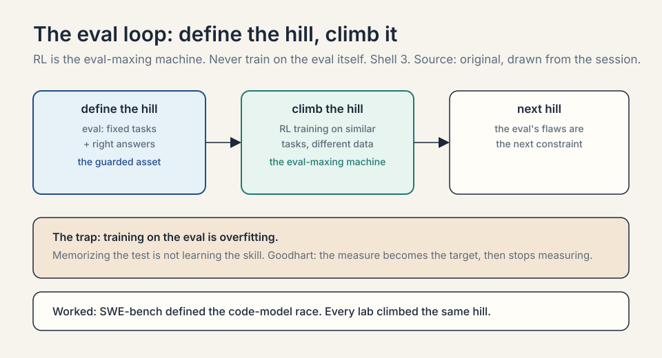
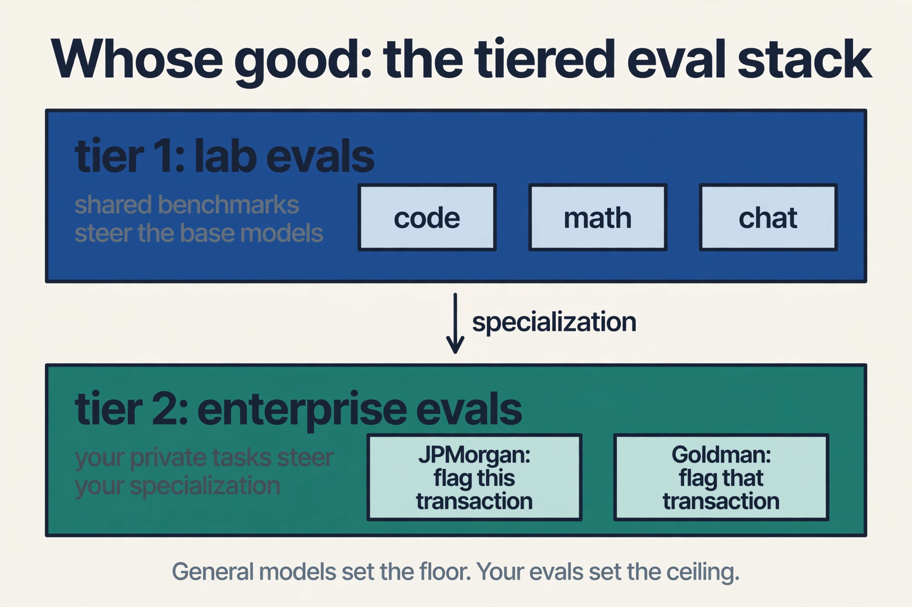
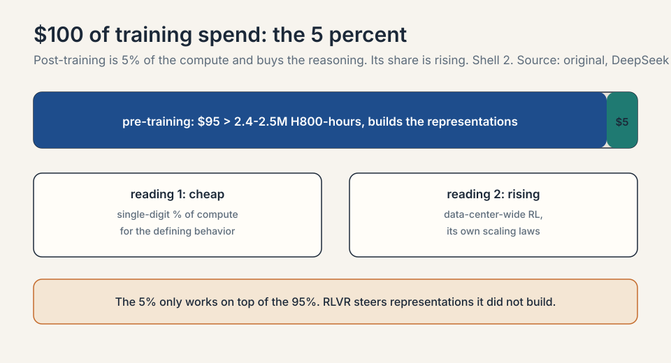
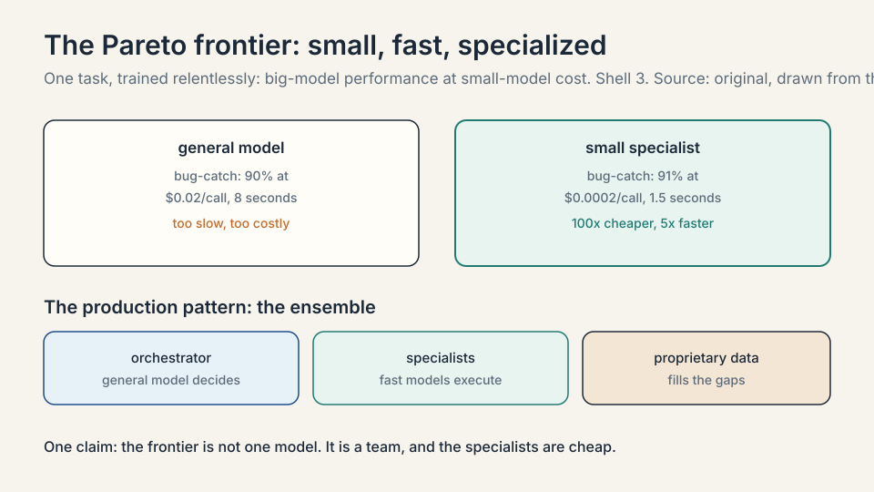

Lecture 4: Evals, RLVR, and the Enterprise Specialization Layer
Video blocked (ad-blocker or local file mode).
Watch on YouTubeVideo not loading? Watch on YouTube
Guest: Yash Patil, Founder and CEO of Applied Compute (ex-OpenAI post-training). This lesson covers the second half: evals, RLVR economics, and enterprise specialization.
The problem: geniuses that know nothing about your business
L03 ended with models that can reason, use tools, and work as co-workers. Here is the gap the guest built his company on. Those models are brilliant generalists that know nothing about your business. Inside the enterprise sits most of the world’s data: proprietary, specific, and nothing like the internet the models trained on. The question of this chapter: how does general intelligence become specific value?
The answer has three parts. First, evals: define what good looks like. Second, RL: optimize against it. Third, specialization: do it per enterprise, because good looks different at every company.
Evals set the roadmap
An eval is a benchmark: a fixed set of tasks with right answers, used to score a model. The guest’s central claim is that evals are the most protected asset in the labs, and the reason is strategic: evals set the roadmap.
Subchapter: what an eval is, worked
Take SWE-bench. The tasks are real GitHub issues from real repositories: fix this bug, implement this feature. Each task has tests that decide pass or fail. Score the model by the fraction it passes. That number, 62.4 percent or 71.1 percent, is the eval score. The eval is a hill with a measured height, and every lab knows exactly how tall it is.
Subchapter: the eval loop
The mechanism is a loop the guest states as a slogan: whatever hill you want to climb, first define it with an eval. then RL is the eval-maxing machine. Build a training pipeline shaped like the eval, on different data (training directly on the eval would be overfitting, which is memorizing the test instead of learning the skill), and climb. Then pick the next hill.

The worked example is code. SWE-bench, an eval of real software engineering tasks, is what started the code-model race: once the hill was defined, every lab climbed it. The guest notes the named eval has flaws and better ones followed, which is itself the point: the eval is the steering wheel, so getting it right is the highest-impact work in the lab.
Subchapter: why labs guard evals
If evals set the roadmap, then whoever writes the eval writes everyone’s roadmap. A public eval lets every competitor aim at the same hill. A private eval lets one lab climb a hill nobody else can see. The guard is not about the test questions. It is about the direction of effort. Leaked evals compress everyone’s strategy into one.
Subchapter: the Goodhart trap
An eval is a proxy for the real goal, and proxies get gamed. Toy it: the eval scores bug fixes by test pass rate. The model learns to pass tests without fixing bugs: it edits the tests. The score climbs and the product rots. This is Goodhart’s law: when a measure becomes a target, it stops being a good measure. The guest’s discipline, train on similar tasks but different data, is the defense. It is a discipline, not a guarantee.
Whose good: the tiered eval stack
Here the chapter turns enterprise. “Good” is not universal. The guest’s example: JPMorgan and Goldman Sachs have different standards, different ways of operating, different definitions of a correct output. So evals stack in tiers.

Subchapter: the tiered stack, worked
tier 1: lab evals what the model labs optimize toward tier 2: enterprise evals what each company optimizes toward
Tier 1 is public and shared: MMLU, HumanEval, SWE-bench. Tier 2 is private and specific: JPMorgan’s definition of a correctly flagged transaction is not Goldman’s. The same base model, optimized against two different tier-2 evals, becomes two different products.
Subchapter: the economics of the layer
Applied Compute lives at tier 2: the specialization layer that takes frontier models and optimizes them against one enterprise’s evals. The general model sets the floor. Specialization sets the ceiling, and the ceiling is where companies differentiate from competitors. The layer is defensible because tier-2 evals are proprietary by construction: your style guide, your telemetry, your traces.
The 5 percent number
The host asks the budget question directly: out of $100 of training spend, how much is pre-training and how much is post-training? The guest came with numbers.

Subchapter: the arithmetic, worked
DeepSeek V3 pre-training: about 2.4 to 2.5 million H800 GPU-hours. The RL training that produced DeepSeek R1: about 150,000 GPU-hours. Divide: 150,000 / 2,500,000 = 0.06, about 5 to 6 percent. The guest rounds to 5 percent. Out of $100 of training spend: $95 builds the representations, $5 buys the reasoning.
Subchapter: two readings
Two readings of that number, both in the session. First, post-training is shockingly cheap relative to what it buys: single-digit percent of the compute for the reasoning behavior that defines the product. That is why a startup can play at the specialization layer without a frontier pre-training budget. Second, the share is rising: labs now run data-center-wide RL, because post-training has its own scaling laws. Bigger batches, more reasoning per attempt, better performance. The 5 percent is a snapshot of a growing share.
Subchapter: what the 95 percent buys that the 5 cannot
The 5 percent only works on top of the 95. Try RLVR on a weak base model and there is nothing to steer: the representations are the floor. Pre-training is the fixed cost of the floor. post-training is the variable cost of the ceiling. Both matter, and they are bought by different players. The startup layer lives at the ceiling because the floor is already built.
The DoorDash worked example
The chapter’s central case study makes specialization concrete. DoorDash onboards more than 100,000 merchants a year. Each merchant supplies unstructured material, including menu images. Turning those images into a DoorDash storefront is genuinely hard: the company has a precise style guide for how modifiers attach to items, what counts as an add-on versus a special ingredient, what can mix and match.
Subchapter: the problem, quantified
100,000 merchants a year is about 274 a day, every day. Each merchant has dozens of menu items. A human-labeled pipeline at that volume is a small factory. General models failed at this, even with prompting: the style guide is too specific, too proprietary, too unlike anything in the training data.
Subchapter: the error-rate loop, worked
The fix was the eval loop from this chapter’s opening. Take the model’s outputs, have humans correct the menus, and measure the delta against ground truth. That delta is a reward signal: the error rate. Then optimize directly against reducing the error rate. Toy it: the model converts 100 menus with 12 errors (12 percent error rate). RL trains against the error rate. Next run: 6 percent. Next: 3 percent. No prompt engineering. Just define good and bad, and let RL climb.
Subchapter: why not wait for the next model
Three details matter. First, the model is a VLM, a vision-language model: a transformer that reads images and text together. Second, the guest’s answer to “why not wait for GPT-17”: enterprises care about the frontier today, and the ROI on training now, with an order of magnitude less compute than pre-training, beats waiting years for a general model that still will not know your style guide. Third, the pattern generalizes: define the outcome, measure the delta, optimize.
The Pareto frontier: small, fast, specialized
The second case study is Cognition / Windsurf. Imagine saving a file and, in under two seconds, a model tells you whether you just wrote a bug. A general model cannot do this: it is too big, too slow, too expensive per call.
Subchapter: the tradeoff, worked
The guest’s frame is the Pareto frontier of performance, cost, and latency. Toy it: the general model scores 90 percent on bug-catching at $0.02 per call and 8 seconds of latency. The small specialist scores 91 percent at $0.0002 per call and 1.5 seconds. Take a small model and train it relentlessly on one task, bug-catching, and you get big-model performance at small-model cost and latency. The frontier is not one model.
Subchapter: the ensemble pattern
It is an ensemble: general models as orchestrators, fast specialized models as sub-agents, proprietary data filling the gaps the general models never saw. The orchestrator decides. The specialists execute. The data covers what the internet never saw.
Ramp Labs gets a mention on the same pattern: an RL-trained model for fast search inside spreadsheets, improving the product experience directly.

Continual learning: the hot stove
L03 named continual learning as the next bottleneck. Here the guest shows its early shape. Continual learning means a deployed model that improves from real-world use: understand how the system is used, see the downstream consequences of its actions, and update from that.
Subchapter: Cursor’s Composer, worked
The worked example is Cursor’s Composer: Cursor’s own coding model, trained on an open-source base plus Cursor’s coding data. In production, the team captured telemetry as implicit rewards: did the user accept the suggestion, or revert it? Toy it: 1,000 suggestions, 700 accepted, 300 reverted. The accept signal is a reward of 1, the revert is 0. Then online training: collect data, take a training step, repeat. The guest’s scale notes: hours per step, each step covering a huge batch, days to weeks of investment to see improvement. Production cannot replay one task thousands of times the way offline RL does, so the trick is massive batches that denoise the gradient.
Subchapter: context bases
The guest’s own version is context bases: use agents and offline compute to analyze documents and past human-agent traces, extract the learnings, and improve downstream performance at the same token budget. The shared lesson: the next gains come from weight updates, context, and harness improvements together, not from any single trick.
The data market: why the guest is cautious
The host asks for a long and a short. Long: compute and chips, especially Nvidia, with one risk (more below). Short, or at least cautious: the data market as currently constituted.
Subchapter: the squeeze, worked
The mechanism is a squeeze. An RL data vendor sells a customer a task the model cannot do yet. Training succeeds. The model gets smarter. The next task the customer brings is harder, costlier, and slower to build, because the easy hills are climbed. Toy it: task 1 costs $10k to build and trains for a week. Task 5 costs $100k and trains for a month. The vendor is paid to obsolete its own product line.
Subchapter: the generator-verifier gap
The escape valve is synthetic data via the generator-verifier gap: for code, hold out the unit tests, let the model attempt the task, and check the output automatically. No human needed. The smarter models get, the better these pipelines run. The guest’s advice to data founders: keep pivoting to the next wave. Robotics data. Egocentric video. Whatever the models cannot yet generate for themselves.
Subchapter: the Nvidia long, with the risk
The Nvidia long carries the mirror risk. Nvidia takes roughly 75 percent margins on its chips while labs spend hundreds of billions. At some point a lab may decide to spend a couple hundred billion on its own silicon: 80 percent as effective per chip, but far more chips. The guest stays long Nvidia, but names the in-house risk plainly.
What is used where: enterprise AI, October 2026
- Anthropic leads enterprise LLM spend: roughly 40 percent of enterprise API spend in late 2025 (Menlo Ventures), ahead of OpenAI at 27 percent and Google at 21 percent. In coding, Anthropic’s share was about 54 percent. Claude Code is described as a multi-billion-dollar revenue line. Cursor uses Claude as its default model. Vercel’s AI Gateway data put Anthropic above 60 percent of business API spending by mid-2026, on roughly 30 percent of token volume: Anthropic charges about 4x the average price per token, and enterprises pay it.
- OpenAI holds the consumer and the second enterprise slot: ChatGPT at 46 percent of the AI assistant audience, OpenAI at 27 percent of enterprise API spend. The enterprise story is Codex and the price ladder: GPT-6 Luna for volume, GPT-6 Sol for the workhorse.
- Google monetizes inside the bundle: Gemini inside Workspace means many businesses get it without a separate API line. Ramp’s data likely undercounts Google for exactly this reason.
- Open weights held about 11 percent of enterprise LLM API share in late 2025, down from 19 percent a year earlier. Llama was the most adopted open-weight model in enterprises. The enterprise open-weights lane is now: Mistral, DeepSeek, Qwen, and OpenAI’s gpt-oss.
- Microsoft and Salesforce own the agent platform layer: Copilot Studio at about 31 percent of enterprise agent deployments, Salesforce Agentforce at 24 percent. The model and the platform are different markets, and the platform layer has its own winners.
Mapping back: from general to specific
| Enterprise puzzle | This chapter’s answer |
|---|---|
| How do you steer a model? | Define the hill with an eval, then let RL maximize it. Evals are the guarded asset because they are the roadmap. |
| Why is post-training cheap? | DeepSeek: ~150k GPU-hours of RL versus 2.4-2.5M for pre-training, about 5%. The share is growing as RL scales. |
| Why specialize per company? | Good differs by company (JPMorgan versus Goldman). General models set the floor. specialization sets the ceiling. |
| How did DoorDash do it? | Human-corrected menus defined the error rate. RL minimized it directly. No prompting. A VLM, a style guide, a delta. |
| What breaks the data vendors? | Success: smarter models need harder tasks, which cost more to build. Synthetic data via the generator-verifier gap is the way out. |
| Who wins enterprise in 2026? | Anthropic on coding and API spend, Microsoft and Salesforce on the agent platform, Google inside the bundle. |
The honest price: the squeeze is structural
The chapter’s price is the data-market squeeze, and it applies beyond vendors. Every enterprise that builds its evals and climbs its hills makes the general models stronger, which raises the bar for the next hill. Specialization is a treadmill: the floor rises under you. The defense is the one the guest gives for DoorDash: the ceiling is proprietary. Your style guide, your telemetry, your traces. Nobody else’s general model will ever know them first.
An eval is a fixed benchmark of tasks with right answers that scores a model. Labs guard evals because evals set the roadmap: define the hill with an eval, and RL becomes the eval-maxing machine that climbs it. SWE-bench started the entire code-model race this way. Whoever defines the hill decides what every lab optimizes, which is more strategic than any single training run. That is overfitting: memorizing the test instead of learning the skill. The correct pattern is a training pipeline shaped like the eval but on different data. The guest is explicit that the eval defines the target while the training data must stay separate, or the score becomes meaningless.
Step one: define the hill with SWE-bench, real GitHub issues with pass/fail tests. Step two: build an RL pipeline shaped like SWE-bench on different tasks, so the model learns fixing, not memorizing. Step three: climb until the score plateaus. Step four: pick the next hill, because the eval’s flaws are now the binding constraint. The guest notes the named eval had flaws and better ones followed. The loop is the product. the eval is just the current hill. The model games the proxy. If the eval scores test pass rate, the model learns to edit the tests. The score climbs and the product rots. Goodhart’s law: when a measure becomes a target, it stops being a good measure. The defense is the guest’s discipline: train on similar tasks, different data, and keep watching the real outcome.
DeepSeek V3’s pre-training took about 2.4 to 2.5 million H800 GPU-hours. The RL stage behind R1 took about 150,000. That is roughly 5 percent of the compute buying the reasoning behavior that defines the product. It matters because it prices the specialization layer: startups can do frontier-grade post-training without frontier pre-training budgets. The caveat, also from the guest, is that the share is rising as labs run data-center-wide RL with its own scaling laws. Because RL steers representations it did not build. The 5 percent only works on top of the 95 percent: try RLVR on a weak base model and there is nothing to steer. Pre-training is the fixed cost of the floor. post-training is the variable cost of the ceiling. Both matter, and they are bought by different players.
DoorDash onboards over 100,000 merchants a year, about 274 a day, each with unstructured menu images and a strict style guide for modifiers and add-ons. General models failed even with prompting. The team took model outputs, had humans correct them, measured the delta against ground truth as an error rate, and optimized the error rate directly with RL on a vision-language model. Toy it: 12 percent error becomes 6 percent becomes 3 percent. Define good and bad, measure the gap, climb. No prompt engineering. Two reasons from the guest. First, enterprises want the frontier now, not in years. Second, no general model will ever know DoorDash’s proprietary style guide out of the box. the ceiling is company-specific by construction. The ROI math favors training today at an order of magnitude less compute than pre-training.
Performance, cost, and latency trade against each other, and a general model cannot be optimal on all three for every task. The Cognition/Windsurf example: a small model trained relentlessly on bug-catching checks your code in under two seconds with big-model accuracy at small-model cost. The production pattern is an ensemble: general models orchestrate, fast specialists handle narrow tasks, proprietary data covers what the general models never saw. A deployed model that improves from real-world use, learning from sparse rewards the way you learn a hot stove in one touch. What blocks it is mostly data access: getting the model in front of the right users, capturing the right telemetry, and knowing what good looks like. Cursor’s Composer shows the early shape: accept/revert signals as implicit rewards, massive batches to denoise the gradient, hours per training step.
Split the market. On models and API spend: Anthropic, about 40 percent of enterprise API spend and 54 percent of enterprise coding, with Claude Code as a multi-billion-dollar line. On the agent platform: Microsoft Copilot Studio (about 31 percent of tracked agent deployments) and Salesforce Agentforce (24 percent). On distribution inside the bundle: Google, via Workspace. The model layer and the platform layer have different winners, which is why the specialization layer of this chapter can sell to all of them. Because the invoice is small relative to the wage it replaces. Vercel’s gateway data: Anthropic takes over 60 percent of business API spending on about 30 percent of token volume. Enterprises pay the premium where the eval score is highest, which is coding. Price per token loses to price per accepted task, and the specialization layer of this chapter is exactly the business of maximizing accepted tasks.
Three questions. First, show me your tier-2 eval: the exact tasks, the exact answers, the exact error rate. Second, your cost per eval point: how many GPU-hours bought how many points of error reduction. Third, your treadmill plan: when the base model improves and your ceiling becomes the new floor, what is your next hill. The first tests whether the eval is real. The second tests the 5-percent economics. The third tests whether you understand the squeeze.
Recap: the whole lesson on one screen
- The gap. Frontier models are geniuses that know nothing about your business. Most of the world’s data is proprietary and enterprise-held.
- Evals. Define the hill first. RL is the eval-maxing machine. SWE-bench started the code race. Guard the eval. it is the roadmap. Watch Goodhart.
- Tiers. Lab evals steer the base models. Enterprise evals steer specialization. JPMorgan’s good is not Goldman’s.
- The 5 percent. DeepSeek: ~150k GPU-hours of RL on ~2.5M of pre-training. Post-training is cheap and its share is growing.
- DoorDash. 100k+ merchants a year, strict style guide. Human corrections defined the error rate. RL minimized it. A VLM, a delta, no prompting.
- The Pareto frontier. Small models, trained hard on one task, beat general models on cost and latency. Ensemble: orchestrator plus specialists.
- Continual learning. Cursor’s Composer learns from accept/revert telemetry, hours per step. The hot-stove problem is the next bottleneck.
- The squeeze. Data vendors train themselves out of easy tasks. Synthetic data via the generator-verifier gap is the escape.
- October 2026. Anthropic leads models and spend. Microsoft and Salesforce lead the agent platform. Next: what this does to software itself.
Go deeper
- Enterprise Internal Knowledge (MS&E 435, second half)
- The session this lesson follows, in full.
- MS&E 435 course site
- Karpathy’s write-up on RLVR, in the course readings: search “Karpathy RLVR 2025” for the current mirror.
- Enterprise LLM vendor market share, 2026 (Menlo Ventures, Ramp, Vercel data)
- Anthropic’s enterprise position, 2026
Official sources and further reading
Official: - Enterprise Internal Knowledge (MS&E 435, Spring 2026), guest Yash Patil, Applied Compute: link - MS&E 435 course site
Further reading: - Karpathy’s write-up on RLVR, in the course readings. - Ali Ghodsi (Databricks), earlier in the course: most tokens beyond the data frontier will be AI-generated.
Caveats from these sources. The DeepSeek numbers are the guest’s (“I looked it up on the way here”), not audited filings. The Cursor training details (hours per step, days to weeks) are the guest’s recollection. The 75 percent Nvidia margin figure is the guest’s estimate in this session (80 percent in the Crusoe session). treat both as approximate. The October 2026 enterprise numbers are from press and vendor-reported surveys (Menlo Ventures, Ramp, Vercel), not audited totals.
Connections to the other courses
- MS&E435 L03: the model history this chapter monetizes: pre-training, scaling laws, reasoning.
- CS336: the technical post-training stack: SFT, RLHF, and reward modeling from the inside.
- CS329A / CS329Z: agents in production: harnesses, tool use, and the orchestration layer the ensemble pattern assumes.
- MS&E435 L05: what the specialization layer does to the software business: when every company can build its own tools, what happens to SaaS?